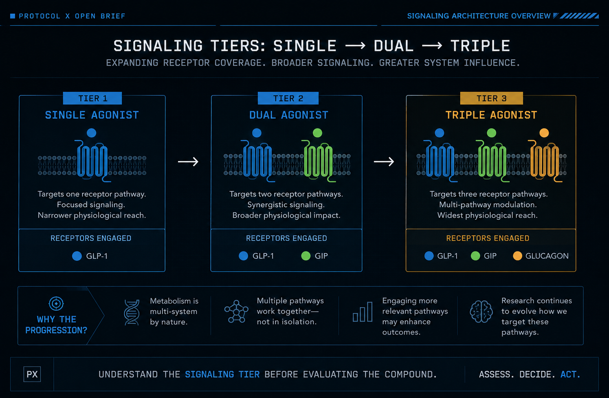

Single, Dual, and Triple Agonists
Understand the signaling tier before evaluating the compound.
Different Tiers Address Different Questions
Single agonists activate one receptor pathway. Dual agonists activate two. Triple agonists activate three.
That progression is not a ranking. Each tier changes the number of pathways involved, the variables under study, and the questions researchers must ask.
The useful question is not which category is best. It is what the signaling tier is designed to investigate.
Understand the signaling tier before evaluating the compound.
Category Before Compound
The Evolution of a Signal
Public discussion often reduces this field to weight-loss headlines. The larger research question is how appetite regulation, glucose control, nutrient sensing, energy use, and hormonal feedback interact.
Researchers increasingly recognized that metabolism is not a single-signal problem. As research expanded from isolated targets toward coordinated pathways, agonist design expanded with it.
Each step adds receptor coverage. It also adds interpretive complexity. The progression describes scope, not superiority.
Single → Dual → Triple
Expanding receptor coverage from single to dual to triple agonists.

What Is a Single Agonist?
A single agonist activates one receptor pathway. In this field, the most established example is the GLP-1 receptor.
This tier isolates one primary receptor target. That narrower scope can make pathway-specific observations easier to interpret, while leaving other metabolic pathways outside the compound's direct target profile.
Research Strengths
- Longer clinical and research history
- Narrower target profile
- Clearer pathway-specific framing
Research Limits
- One target cannot represent the full metabolic network
- Other relevant pathways are not directly engaged
A single agonist is a targeted tool. Its narrower design is both its defining strength and its boundary.
What Is a Dual Agonist?
A dual agonist activates two receptor pathways. A central example in metabolic research combines GLP-1 and GIP receptor activity.
The research question expands from what one pathway can do alone to how two pathways behave when engaged through one molecule.
Research Strengths
- Broader receptor coverage
- Opportunity to study coordinated pathway effects
- Additional context for appetite and glucose signaling
Research Limits
- More targets introduce more variables
- Combined effects require more careful interpretation
Dual agonism broadens the target profile. It does not remove uncertainty; it changes where that uncertainty sits.
What Is a Triple Agonist?
Triple agonists expand receptor coverage again. A prominent research model engages GLP-1, GIP, and glucagon receptors.
Adding glucagon receptor activity extends the research model beyond GLP-1 and GIP. It introduces another pathway connected to glucose availability and energy regulation.
Research Interest
- Three coordinated receptor targets
- Broader metabolic network coverage
- Investigation of glucagon activity alongside incretin pathways
Research Tradeoff
- More complex attribution
- More variables to monitor
- Evidence base remains less mature than earlier tiers
More receptor activity is not automatically better. Triple agonism is a broader research strategy with a larger interpretive burden.
Questions Before Answers
Clarity over noise. Architecture before conclusions.
Systems Check
Before evaluating any agonist compound, establish the category and the evidence boundary:
Research Context
The three tiers do not carry equal evidence histories. Category matters when interpreting what is established and what is still developing.
Researchers increasingly recognized that metabolism is not a single-signal problem. That insight helps explain the move from isolated receptor targets toward coordinated multi-pathway models.
GLP-1 receptor agonists have the most established clinical and research history of the three tiers discussed here.
Dual agonists expand the target profile by engaging GLP-1 and GIP pathways through one molecule.
Triple agonists add glucagon receptor activity. This remains an evolving research area, and interpretation should reflect the maturity of the available evidence.
These notes describe research categories. They are not medical advice, treatment guidance, dosing guidance, or a comparison of individual products.
The Tier Changes the Question
Understand the signaling tier before evaluating the compound.